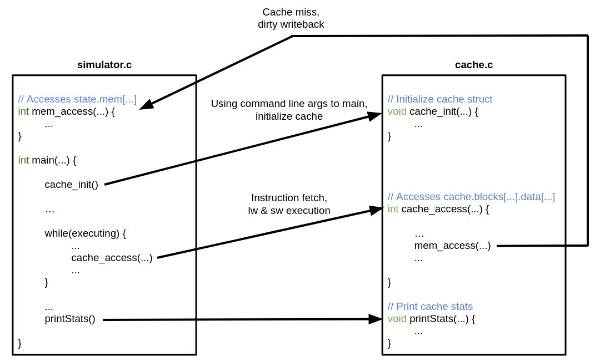

Project 4 EECS 370 (Fall 2024)
| Worth: | 100 points |
|---|---|
| Assigned: | Wednesday, November 13th, 2024 |
| Due: | 11:55 PM ET, Thursday, December 5th, 2024 |
0. Starter Code
Starter code for project 4, the LC2K cache simulator.
1. Purpose
The purpose of this project is to teach you about cache design and how a caching processor generates and services address references.
2. Problem
In this project, you will simulate a CPU cache (unified instruction/data) and integrate the cache into a Project 1 (behavioral) simulator. As the processor simulator executes an assembly-language program, it will access instructions and data. These accesses will be serviced by the cache, which will transfer data to/from memory as needed.

3. Cache Simulator
The central part of this project is to write a function cache_access that implements a
flexible cache simulator. The cache function will be used by the processor
simulation when the processor accesses addresses. Your cache function should
be able to simulate a variety of cache configurations. Once integrated into
your processor simulator, the program will be run as follows:
| ./simulator program.mc blockSizeInWords numberOfSets blocksPerSet |
Your cache function should simulate a cache with the following characteristics:
1) WRITE POLICY: write-back, allocate-on-write
2) ASSOCIATIVITY: varies according to the blocksPerSet parameter.
Associativity ranges from 1 (direct-mapped) to the number of blocks
in the cache (fully associative).
3) SIZE: the total number of words in the cache is
blockSizeInWords * numberOfSets * blocksPerSet
4) BLOCK SIZE: varies according to the blockSizeInWords parameter. All
transfers between the cache and memory take place in units of a single
block.
5) PLACEMENT/REPLACEMENT POLICY: when looking for a block within a set to replace, the best block to replace is an invalid (empty) block. If there is none of these, replace the least-recently used block.
Make sure the units of each parameter are as specified. Note that the smallest
data granularity in this project is a word, because this is the data
granularity of the LC2K architecture. blockSizeInWords, numberOfSets, and
blocksPerSet should all be powers of two. To simplify your program, you may
assume that the maximum number of cache blocks is 256 and the maximum block
size is 256 (these small numbers allow you to use a 2-dimensional array for
the cache data structure, as in the starter code).
4. Origin and Servicing of Address References
As the processor executes an assembly-language program, it accesses addresses.
The three sources of address references are instruction fetch, lw, and sw.
When the program starts up, it will initialize the memory with the machine-code
file as in Project 1. These initialization references should
NOT call cache_access; they should simply set the initial memory state.
Each address reference should be passed to the cache simulator. The cache
simulator keeps track of what blocks are currently in the cache and what state
they are in (e.g. dirty, valid, etc.). To service the address reference, the
cache simulator may need to write back a dirty cache block to memory, then it
may need to read a block into the cache from memory. After these possible
steps, the cache simulator should return the data to the processor (for
read accesses) or write the data to the cache (for write accesses). Each
of these data transfers will be logged by calling the printAction function
(don’t modify this code at all - but be sure to #include the correct headers.
This is also included in the starter code).:
| //Use this when calling printAction. Do not modify the enumerated type below. | |
| enum actionType | |
| { | |
| cacheToProcessor, | |
| processorToCache, | |
| memoryToCache, | |
| cacheToMemory, | |
| cacheToNowhere | |
| }; | |
| /* | |
| * Log the specifics of each cache action. | |
| * | |
| * DO NOT modify the content below. | |
| * address is the starting word address of the range of data being transferred. | |
| * size is the size of the range of data being transferred. | |
| * type specifies the source and destination of the data being transferred. | |
| * - cacheToProcessor: reading data from the cache to the processor | |
| * - processorToCache: writing data from the processor to the cache | |
| * - memoryToCache: reading data from the memory to the cache | |
| * - cacheToMemory: evicting cache data and writing it to the memory | |
| * - cacheToNowhere: evicting cache data and throwing it away | |
| */ | |
| void printAction(int address, int size, enum actionType type) | |
| { | |
| printf("$$$ transferring word [%d-%d] ", address, address + size - 1); | |
| if (type == cacheToProcessor) { | |
| printf("from the cache to the processor\n"); | |
| } | |
| else if (type == processorToCache) { | |
| printf("from the processor to the cache\n"); | |
| } | |
| else if (type == memoryToCache) { | |
| printf("from the memory to the cache\n"); | |
| } | |
| else if (type == cacheToMemory) { | |
| printf("from the cache to the memory\n"); | |
| } | |
| else if (type == cacheToNowhere) { | |
| printf("from the cache to nowhere\n"); | |
| } else { | |
| printf("error: unrecognized action\n"); | |
| exit(1); | |
| } | |
| } |
5. Getting Started
The compiled executable for project 4 requires two files: one file containing
a modified solution to project 1s, and one file that manages the cache called
cache.c. The compiler will link these two files together to create the executable.
The project 1s solution still contains main, the logic to read in machine code
files and perform operations for different instructions. For project 4, main
will make calls to 3 functions in cache.c:
1) cache_init, which sets up the cache for later use.
2) cache_access, which services access requests for instruction fetches, loads, and stores.
3) printStats, which prints some extra debugging information and statistics on the terminal.
The project 1s solution also still includes the stateType definition from
project 1s, which includes the memory array. To access the memory array, cache.c
will make function calls to mem_access, which will be defined in the modified
project 1s solution.
This picture below shows how the project 1s solution and cache.c interact:

There are two ways to complete this project: by modifying your project 1s
simulator.c to link with your cache.c, or by using the instructor
project 1s solution inst_p1s_sim.o to link with your cache.c.
After downloading the starter code, rename starter_cache.c to cache.c before you
begin to edit code.
5.1. Using the Instructor Project 1s Solution
The instructor project 1s solution inst_p1s_sim.o is a compiled version of the
C code solution from project 1s, with the modifications listed above. You may assume
it calls the 3 functions in cache.c as appropriate, and handles file reading and
machine code execution properly. Compared to project 1s, the output is limited: printState
is only called for the final state of the machine, and the number of memory accesses
are printed at the end. This object file also has one modification to printState:
If any cacheToMem printAction wrote to a memory location outside the memory defined in the
machine code, printState will show these modifications. For example, if the input machine
code contained 8 lines, and one sw writes to location 100, and the cache line containing
location 100 is written to memory, printState will print memory
values from 0 to the highest address in the same cache block as location 100
. After downloading the starter code and renaming starter_cache.c to
cache.c, you can compile cache.c with inst_p1s_sim.o using gcc cache.c inst_p1s_sim.o -lm -o simulator
and run the executable on an lc2k machine code file.
If you choose to use the instructor object file, beware of the following particulars:
First, this object file is only officially supported on CAEN systems since it was
compiled on a linux x86 system similar to the autograder servers. If you are not
already in the habit of testing your projects on CAEN, it is recommended to follow
setup guide from EECS 280.
Also, this object file does not contain debug information so that instructors can protect
the instructor project 1s solution. This means that debugging with a visual debugger or
GDB will only show you what is happening in your cache.c. It also does not call
printState on every instruction executed, so print debugging will not be as helpful
as if you use your project 1s code. Finally, if you choose to use the starter Makefile,
make sure to change the compilation dependecies in there to link with the instructor
project 1s solution.
5.2. Using Your Project 1s Solution
If you choose to modify your project 1s, your code should behave similarly to the original
solution with a few exceptions so that it links with cache.c as defined above. You will
not be turning in this code, so this is for your local testing only. Follow these steps to
modify your project 1s solution.
1) Copy your project 1s solution simulator.c and rename it to my_p1s_sim.c.
2) Add the following lines near the top of my_p1s_sim.c, after the global stateType
definition, and before main:
| extern void cache_init(int blockSize, int numSets, int blocksPerSet); | |
| extern int cache_access(int addr, int write_flag, int write_data); | |
| extern void printStats(); | |
| static stateType state; | |
| static int num_mem_accesses = 0; | |
| int mem_access(int addr, int write_flag, int write_data) { | |
| ++num_mem_accesses; | |
| if (write_flag) { | |
| state.mem[addr] = write_data; | |
| if(state.numMemory <= addr) { | |
| state.numMemory = addr + 1; | |
| } | |
| } | |
| return state.mem[addr]; | |
| } | |
| int get_num_mem_accesses(){ | |
| return num_mem_accesses; | |
| } |
If state is declared in main or somewhere else, remove that declaration.
3) Change the command line argument handling near the top of main so that it can
accept cache parameters as detailed in Section 3. After
taking in these command line arguments, pass them to the cache with a call to cache_init.
4) For instruction fetches, loads, and stores, replace accesses to state.mem with
function calls to cache_access.
5) Upon a halt instruction, after printing the final state of the processor, make
a function call to printStats.
6) At this point, if you can compile cache.c with my_p1s_sim.c using
gcc cache.c my_p1s_sim.c -lm -o simulator and run the executable on assembled lc2k machine code.
It is recommended to do this for at least one test case from project 1s so that you
can see if it runs correctly.
7) Modify output to match what the instructor solution outputs. This is not required, but
will greatly aid in debugging. Remove calls to printState except for the final state.
Print the num_mem_accesses after printing the final state. See Section 9 for an
example of what output the autograder will see.
5.3. Hints for Either Option
For either method, note that starter_cache.c linked with either my_p1s_sim.c or
inst_p1s_sim.o will provide a near-complete version of project 1s, without many of the
printed states, and with some statistics printed. It might be helpful to run the starter
solution on some of your project 1s test cases to see how that works.
For either method, you will not be submitting a project 1s solution to the autograder.
Your cache.c should work properly with any proper my_p1s_sim.c and inst_p1s_sim.o.
If you are struggling with one of the above options, try using the other.
6. Test Cases
An integral (and graded) part of writing your cache simulator will be to write a suite of test cases to validate any LC2K cache simulator. This is common practice in the real world–software companies maintain a suite of test cases for their programs and use this suite to check the program’s correctness after a change. Writing a comprehensive suite of test cases will deepen your understanding of the project specification and your program, and it will help you a lot as you debug your program.
The test cases for this project will be short assembly-language programs that, after being assembled into machine code, serve as input to a simulator. You will submit your suite of test cases together with your cache simulator, and we will grade your test suite according to how thoroughly it exercises an LC2K cache simulator. Each test case may be at most 50 lines (as this is the limit for the project 1a assembler) and may execute at most 10000 instructions on a correct simulator, and your test suite may contain up to 20 test cases. These limits are much larger than needed for full credit.
Your test cases MUST assemble as well as halt within 10000 instructions. We encourage you to run your test cases on your project 1 simulator prior to submitting to ensure they halt.
Each test case will specify the cache parameters to use when running the test case. These parameters will be communicated via the name of the test case file. Each test case should have a 3-part suffix, where each part identifies a cache parameter and the parts are separated by periods:
| <alphaNumeric>.<blockSizeInWords>.<numberOfSets>.<blocksPerSet>.<fileExtension> |
For example, the test case in Section 9
would be named p4spec.4.2.1.as. The combination of cache parameters should be legal,
meaning that they should all be nonzero powers of 2, and not require a block size or number
of blocks exceeding 256 (i.e. blockSizeInWords and numberOfSets*blocksPerSet should not
exceed 256). Do not include spaces, extra periods, or anything besides alphanumeric characters
or underscores or periods in your file names.
Writing good test cases for this project will require careful planning. Think about what different types of behavior a cache can exhibit and generate test cases that cause the cache to exhibit each behavior. Think about how to test the various algorithms used in the cache simulator, e.g. LRU, writebacks, read and write hits, read and write misses. As you write the code for your simulator, keep notes on different conditions you think of, and write test cases to test those conditions. The instructor buggy simulators will not have error-checking bugs. See Section 7 for how your test suite will be graded.
7. Grading, Auto-Grading, and Formatting
We will grade on the correctness of your cache simulator and the comprehensiveness of your test suite.
Only output from the calls to printAction, printState (from from the project 1s
simulator), and the reported number of memory accesses performed will be graded for
correctness and must match the expected output exactly. This means that any lines
not containing $$$, or between @@@ and end state will be ignored.
Note that the only graded output in cache.c comes from printAction - other
graded output is generated by the simulator portion from project 1s.
To help you validate your project, your submission will be graded automatically. You may then continue to work on the project and re-submit. There is a limit of 3 submissions per day with feedback, all other submissions will be recorded but you will not receive feedback until after the deadline.
The results from the auto-grader will not be very illuminating; they won’t tell you where your problem is or give you the test programs. The purpose of the auto-grader is to help you know that you need to keep working on your project (rather than thinking it’s perfect and ending up with a 0). The best way to debug your program is to generate your own test cases, figure out the correct answers, and compare your program’s output to the correct answers. This is also one of the best ways to learn the concepts in the project.
The student suite of test cases for the simulator will be graded according to how thoroughly they test a cache simulator. We will judge thoroughness of the test suite by how many potential bugs in a cache simulator are exposed. The auto-grader will correctly assemble each valid test case in your suite, then use it as input to a set of buggy simulators. A test case exposes a buggy simulator by causing it to generate a different answer from a correct simulator. The test suite is graded based on how many of the buggy simulators were exposed by at least one test case. There are 18 buggy simulators, each worth 3/4 points. The maximum points available for catching buggy solutions is 12 points, so you will need to catch 16/18 bugs for full credit.
Because all programs will be auto-graded, you must be careful to follow the exact formatting rules in the project description:
1) Don’t modify printAction at all. Download the starter code into your
program electronically (don’t re-type it) so you avoid typos.
2) Check your program’s output on the sample assembly-language program and output at the end of this handout. This one test will also be visible in the autograder.
3) Don’t print the sequences $$$ or @@@ anywhere except in printAction(). Any
line containing $$$ will be graded, as well as any lines between @@@
and end state (inclusive). You may find the Project 1 printState function
or the provided printCache() function useful in debugging, but
make sure there are no extra @@@ or $$$ strings.
Ensure that test case names include alphanumeric characters, underscores, and periods ONLY
8. Turning in the Project
Use autograder.io to submit your files. You have been added as a student to the class, so you should see EECS 370 listed as a class.
You will submit the following files to the autograder:
-
Your cache simulator, a C program named
cache.c -
Suite of test cases (each test case is an assembly-language program in a separate file, ending in “.as”, “.s”, or “.lc2k”). Each test case should have a suffix which tells the auto-grader which cache parameters should be used when running that test case (see Section 6). Test case names should only include alphanumeric characters, underscores, and periods.
Your cache must be in a single C file. We will compile your program on a
Linux workstation using gcc cache.c inst_p1s_sim.o -lm -o simulator, so your program should
not require additional compiler flags or libraries. Standard library headers do
not require additional compiler flags or libraries. The official time of submission
for your project will be the time the last file is sent. If you send in anything
after the due date, your project will be considered late (and will use up your late
days or will incur a penalty in your grade).
9. Sample Assembly-Language Program and Output
Here is a sample assembly-language program p4spec.4.2.1.as included in the starter code:
and its corresponding output with the following cache parameters:
blockSizeInWords = 4, numberOfSets = 2, and blocksPerSet = 1.
This output is also included in the starter code folder. Make sure you
understand each of the data transfers and their order. Again, see Section 7
to know which lines are graded, and which are there to help you in debugging.
| Simulating a cache with 2 total lines; each line has 4 words | |
| Each set in the cache contains 1 lines; there are 2 sets | |
| $$$ transferring word [0-3] from the memory to the cache | |
| $$$ transferring word [0-0] from the cache to the processor | |
| $$$ transferring word [4-7] from the memory to the cache | |
| $$$ transferring word [6-6] from the processor to the cache | |
| $$$ transferring word [1-1] from the cache to the processor | |
| $$$ transferring word [4-7] from the cache to the memory | |
| $$$ transferring word [20-23] from the memory to the cache | |
| $$$ transferring word [23-23] from the cache to the processor | |
| $$$ transferring word [2-2] from the cache to the processor | |
| $$$ transferring word [20-23] from the cache to nowhere | |
| $$$ transferring word [28-31] from the memory to the cache | |
| $$$ transferring word [30-30] from the cache to the processor | |
| $$$ transferring word [3-3] from the cache to the processor | |
| machine halted | |
| final state of machine: | |
| @@@ | |
| state: | |
| pc 4 | |
| memory: | |
| mem[ 0 ] 0x00C10006 | |
| mem[ 1 ] 0x00810017 | |
| mem[ 2 ] 0x0081001E | |
| mem[ 3 ] 0x01800000 | |
| mem[ 4 ] 0x00000000 | |
| mem[ 5 ] 0x00000000 | |
| mem[ 6 ] 0x00000000 | |
| mem[ 7 ] 0x00000000 | |
| registers: | |
| reg[ 0 ] 0 | |
| reg[ 1 ] 0 | |
| reg[ 2 ] 0 | |
| reg[ 3 ] 0 | |
| reg[ 4 ] 0 | |
| reg[ 5 ] 0 | |
| reg[ 6 ] 0 | |
| reg[ 7 ] 0 | |
| end state | |
| $$$ Main memory words accessed: 20 | |
| End of run statistics: | |
| hits 3, misses 4, writebacks 1 | |
| 0 dirty cache blocks left | |